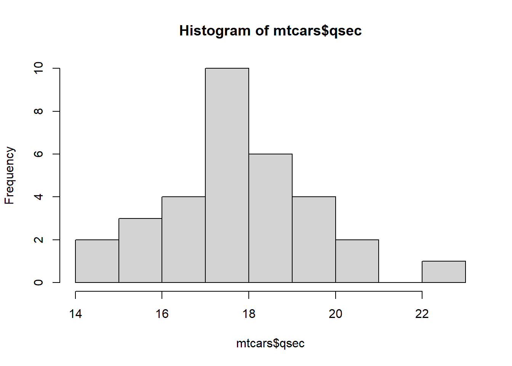

# install.packages("pacman")
pacman::p_load(readr,readxl,haven,tidyverse,knitr,psych,expss)Introdução ao R - 2026.1
Disciplina: Metodologia em Pesquisa Quantitiva
Introdução
O R é uma linguagem e um ambiente de programação dentro do qual se pode fazer uma infinidade de operações estatísticas e de processamento de dados. Foi concebido para ser colaborativo e gratuito. Qualquer pessoa pode criar uma função, ou um conjunto de funções (pacote) e disponibilizar a outros usuários… gratuitamente! Visite o site do R e baixe o programa para instalação em seu computador.
Em associação ao R, costuma-se usar o RStudio (baixe e instale clicando aqui), que facilita o uso do R ao disponibilizar um conjunto de quatro janelas que funcionam para as seguintes funções:
- digitação de texto (superior, à esquerda),
- display de resultados (console) (inferior, à esquerda),
- visualizador de objetos (arquivos) gerados ao realizar um trabalho (superior, à direita),
- informações gerais: arquivos, plotagens, pacotes instalados, help, e visualizador de imagens (inferior, à direita).
Criação de um projeto
- File + New Project + New Directory (ou Existing Directory) +
- Directory Name (Escolha um nome para o diretório) +
- Usando o Browse para localizar o diretório principal onde pretende criar o seu novo diretório +
- Create Project
Para a digitação dos comandos, deve-se abrir um novo Script ou um Quarto Dolcument.
Abre-se um novo script com a seguinte linha de comando: File + New File + R Script, cujo atalho é CTRL+SHIFT+N.
Abre-se um novo Quarto Document com a seguinte linha de comando: File + New File + Quarto Document. Fazendo isso, abrirá uma aba no quadrante superior esquerdo.
O Quarto Document aceita linhas de texto e linhas de código, mas as linhas de código devem ser escritas dentro de um chunk, que se abre com o comando CTRL+ALT+i.
Já o Script é um grande chunk e não aceita linhas de texto. Por isso, preferimos usar o Quarto Document.
Seja Script ou Quarto, você pode abrir quantas abas desejar.
É possível rodar um comando no R de duas formas:
- Selecionando-o e clicando em “Run” na aba superior da área de digitação.
- Colocar o cursor em qualquer ponto da linha de comando e apertar
CTRL+ENTER.
Instalação e ativação de pacotes
Pense no R como um ambiente Windows. O Windows vem com algumas funções já pré-instaladas, como o bloco de notas, calculadora, etc. No entanto, se você quiser usar o leitor de PDF Adobe Reader, é necessário instalá-lo. E toda vez que você quiser usar o Adobe Reader será necessário ativá-lo (com dois cliques).
No R também é assim, há pacotes que já vêm instalados (base), que são as funções mais básicas. Mas também há pacotes (inúmeros) que foram desenvolvidos para fins específicos (tal como o Adobe para o Windows, que foi desenvolvido para o fim específico de ler documentos PDF). Se você quiser usar um pacotes no R é necessário instalá-lo (uma vez só, tal como instalar o Adobe) e toda vez que for utilizá-lo, é nessário ativá-lo (tal como abrir o Adobe no Windows).
As funções da base, que não precisam da instalação, são as operações matemáticas, plotagem, estatísticas básicas, entre outras. Outras funções estão em pacotes específicos, que precisam ser instalados e ativados.
A instalação de novos pacotes é feita por meio do comando install.packages("nome do pacote"), e a ativação dos pacotes é feita por meio do comando library(nome do pacote).
Então, vamos instalar alguns pacotes que iremos utilizar durante o curso.
Todo pacote do R tem uma documentação, com informações sobre as funções que o pacote contém. Uma forma de encontrar essa documentação é no site rdocumentation.org.
As funções contidas dentro dos pacotes ser acessadas digitando-se o nome da função e parênteses. Por exemplo: hist() para gerar um histograma.
As funções requerem argumentos, que são as informações necessárias para executar uma função. Por exemplo, para executar um histograma com a função hist(), precisamos informar pelo menos uma variável e o banco de dados onde essa variável se encontra. Nesse caso, usamos um banco de dados nativo do R
Se quisermos acessar o help dessa função é só digitar um ponto de interrogação (?) antes do nome da função. Por exemplo, se quisermos a documentação da função hist da base do R, é só rodar o comando ?hist():
hist(mtcars$qsec)
# help da função histograma
# ?hist() A documentação aparecerá na aba Help do quadrante de visualizações de informações do RStudio.
Operadores básicos
Existem também alguns operadores importantes no R, que você deve conhecer:
Um deles é a seta para a esquerda, formada com o sinal de menor e o traço de menos: <-.
Atalho para esse operador: pressione simultaneamente as teclas ALT e -
Esse operador indica que o resultado de uma operação será salva em um objeto.
Por exemplo: o comando abaixo diz “faça a soma de 3 com 4 e guarde o resultado num objeto chamado soma”. Esse objeto (soma) aparecerá no environment (quadrante superior direito do RStudio).
OBS.: Esse comando pode ser substituído pelo sinal de igual (=).
soma <- 3 + 4O comando “#” permite que você faça comentários, sem que o R o entenda como comando. Por exemplo:
soma <- 3 + 4 # Esse comando calcula a soma de 3 + 4 e salva no objeto "soma"O texto que aparece após a # é ignorado pelo R. Esses são os comandos mais básicos. Há muitos outros atalhos…
Atalho O.que.faz
1 CTRL + ENTER Executa a linha selecionada
2 CTRL + SHIFT + C Comenta e descomenta a linha
3 CTRL + L Limpa o console
4 ALT + SHIFT + K Ver a lista de atalhosDefinir diretório de trabalho
Para facilitar o trabalho com salvamento e recuperação de arquivos, é recomendável que se defina um diretório de trabalho, onde todos os arquivos referentes à análise de dados serão salvos.
# para verificar o diretório atual, execute o comando:
getwd()[1] "C:/Users/jmhbu/OneDrive/Documentos/R/2026_Intro_R"# OBS.: se for necessário, navegue até o local desejado utilizando a aba "files"
# defina sua pasta de trabalho utilizando a função:
# setwd("C:/Users/jmhbu/OneDrive/Documentos/R/R_basico/Intro_R")Principais operadores
O R pode ser usado como calculadora…
A tabela a seguir apresenta os principais operadores que usamos nos códigos em R.
Operador Descrição
1 + Adição
2 - Subtração
3 * Multiplicação
4 / Divisão
5 : Sequência
6 ^ Exponencial
7 sqrt Raiz
8 == Igualdade
9 > Maior que
10 < Menor que
11 <= Menor ou igual
12 >= Maior ou igual
13 ! Não
14 & E
15 | Ou
16 c Concatenar
17 $ Busca variáveis dentro de um objetoObs.: o símbolo til “~” também é usado em funções para separar variáveis dependentes de variáveis independentes. Por exemplo: Amabilidade ~ Genero. Nesse caso, a sintaxe pode ser traduzida como: o traço de amabilidade sofre efeito de gênero?
Também se pode usar o ponto “.” para definir que “todas as outras variáveis” serão empregadas. Isso quer dizer que descartadas as variáveis que estão cumprindo outra função, o “.” pede que use todas as outras variáveis.
Exercitando…
# operações matemáticas
3+4[1] 75-2[1] 34*2[1] 89/3[1] 3sqrt(9)[1] 32^3[1] 81:10 [1] 1 2 3 4 5 6 7 8 9 1010:1 [1] 10 9 8 7 6 5 4 3 2 1# 3 = 3
3 == 3[1] TRUE3 > 2[1] TRUE3 < 2[1] FALSE3 >= 2[1] TRUE3 >= 3[1] TRUE3 <= 2:5[1] FALSE TRUE TRUE TRUE3 + 4 >= 14/2[1] TRUE!3 == 5[1] TRUE1 < 2 & 2 < 3[1] TRUE1 == 2 | 2 < 3[1] TRUEOperações lógicas
Algumas palavras são reservadas no R para operações lógicas. As principais são TRUE, FALSE e NA.
op_logicos <- data.frame("Operadores lógicos" = c("NA","NaN","Inf","NULL","TRUE","FALSE"),
Significados = c("Not available - dado faltante/indiponível",
"Not a number - indefinições matemáticas como 0/0, log(-1)",
"Infinito - número muito grande, como 1/0 e 10^310",
"Representa ausência de objeto",
"Condição é verdadeira",
"Condição é falsa"))
knitr::kable(op_logicos, format = "markdown")| Operadores.lógicos | Significados |
|---|---|
| NA | Not available - dado faltante/indiponível |
| NaN | Not a number - indefinições matemáticas como 0/0, log(-1) |
| Inf | Infinito - número muito grande, como 1/0 e 10^310 |
| NULL | Representa ausência de objeto |
| TRUE | Condição é verdadeira |
| FALSE | Condição é falsa |
Criando objetos
Os objetos que podem ser criados no R são:
- listas
- vetores
- matrizes
- array
- dataframes
Vamos definir os que mais usamos em nossas análises.
Lista
Lista é uma estrutura que pode conter elementos de diferentes tipos, inclusive outras listas. É uma estrutura flexível que pode acomodar qualquer tipo de objeto R.
minha_lista1 <- list("sujeitos","sexo",2023:2030,"escolaridade")
class(minha_lista1)[1] "list"# minha_lista é um objeto do tipo lista, que guarda informações de diferentes tipos: sujeitos, sexo, ano, escolaridade...
# essas informações foram salvas num objeto do tipo lista, que pode ser visto no environment
# informações não-numéricas aparecem entre "aspas" para o R reconhecer cada elemento dentro do objeto
# [[1]] significa "coluna 1"
# [1] significa "informação 1"
minha_lista2 <- list(hortifrutis = c("alface","banana","maça"),
carnes = c("frango","carne moída"),
bebidas = c("suco","vinho"))
# também é possível nomear as linhas de uma lista
# esse recurso é útil para salvar as opções de resposta dentro de uma pergunta num questionário
minha_lista3 <- list(sexo=c("masculino","feminino","não-binário"),
escolaridade=c("fundamental","médio","superior"),
estado_civil=c("solteiro/a","casado/a","separado/a"),
renda=c("até 1 salário mínimo","entre 1 e 3 salários mínimos","mais de 3 salários mínimos"))
minha_lista3$sexo
[1] "masculino" "feminino" "não-binário"
$escolaridade
[1] "fundamental" "médio" "superior"
$estado_civil
[1] "solteiro/a" "casado/a" "separado/a"
$renda
[1] "até 1 salário mínimo" "entre 1 e 3 salários mínimos"
[3] "mais de 3 salários mínimos" minha_lista3[2] # mostra o conteúdo da segunda linha$escolaridade
[1] "fundamental" "médio" "superior" minha_lista3$escolaridade[2][1] "médio"Vetor
Vetor: é uma coleção de informações ou elementos da mesma natureza. Por exemplo, as variáveis que costumamos colocar nas colunas dos nossos bancos de dados são vetores.
meu_vetor <- c("masculino","feminino","feminino","masculino","feminino")
is.list(meu_vetor)[1] FALSEis.vector(meu_vetor)[1] TRUEis.data.frame(meu_vetor)[1] FALSE# meu_vetor é um objeto do tipo vetor porque contem informações da mesma natureza. Poderiam ser informações sobre o sexo dos sujeitos em um banco de dados
vetor1 <- c(1, 5, 3, -10)
vetor2 <- c("a", "b", "c", "d")
class(vetor1)[1] "numeric"class(vetor2)[1] "character"# Se tentarmos misturar duas classes, o R vai apresentar um comportamento conhecido como coerção. Ele vai impor uma das classes aos objetos. Por exemplo:
vetor3 <- c(1, 2, "a")
# O R cria um vetor, mas impõe que todos os dados sejam da mesma natureza, transformando os números em caracteres.
vetor3[1] "1" "2" "a"class(vetor3)[1] "character"is.vector(vetor3)[1] TRUEvetor1[2][1] 5Dataframe
Dataframes são uma das estruturas de dados mais usadas no R. Eles são semelhantes a tabelas em um banco de dados. Um dataframe é uma lista de vetores de igual comprimento, em que cada vetor representa uma coluna e compartilha o mesmo número de linhas. Os dataframes podem conter colunas de diferentes tipos de dados. Nossos bancos de dados no R recebem a denominação de dataframes.
# criar vetor sexo, em que 0 é masculino e 1 é feminino.
sexo <- c(0,1,0,0,1)
is.vector(sexo)[1] TRUE# pode-se criar um vetor semelhante, mas com letras
# quando uma informação textual for inserida num objeto, ela tem que ir entre aspas.
sexo_cod <- c("m","f","m","m","f") # vetor com informações sobre sexo
# uma alternativa a isso é transformar a variável sexo em uma variável fator
sexo <- factor(sexo, levels = c(0,1), labels = c("masculino", "feminino"))
idade <- c(25,32,78,12,NA) # vetor com informações de idade
# A partir dos dois vetores anteriores é possível criar um dataframe (conjunto de vetores)
df <- data.frame(sexo_cod,idade)
# acrescentando a variável escolaridade
escolaridade <- c("superior","medio","fundamental","fundamental","medio")
cbind(df,escolaridade) # cbind() é uma função da base que anexa colunas. sexo_cod idade escolaridade
1 m 25 superior
2 f 32 medio
3 m 78 fundamental
4 m 12 fundamental
5 f NA mediodf <- cbind(df,escolaridade)
# acrescentando a variável id
id <- 1:5
df <- cbind(id,df)
# Se quiser inserir um "s" antes do número de cada sujeito, podemos usar a função paste(), que concatena duas partes da informação que constar em uma coluna. Essa função diz: concatene um s com valores de 1 a 5, separados por nada.
paste("s",1:5,sep="_")[1] "s_1" "s_2" "s_3" "s_4" "s_5"id <- paste("s",1:5,sep="")
# uma forma de salvar os resultados em uma nova variável diretamente no banco de dados é usando a função $ (cifrão). Quando digitamos o $ em seguida ao nome do objeto (dataframe), o R abre, automaticamente, abre uma janela de opções com as variáveis que existem no dataframe. Ao selecionar "id", por exemplo, os novos dados serão salvos SOBRE os dados existentes. Caso se queira CRIAR uma nova variável, basta digitar o nome de uma variável inexistente no dataframe.
df$id <- paste("s",1:5,sep="")
# se quiser inserir um novo sujeito no dataframe
suj6 <- list(id="s6",sexo_cod="m",idade=34,escolaridade="superior")
suj6 <- list("s6","m",34,"superior")
rbind(df,suj6) id sexo_cod idade escolaridade
1 s1 m 25 superior
2 s2 f 32 medio
3 s3 m 78 fundamental
4 s4 m 12 fundamental
5 s5 f NA medio
6 s6 m 34 superiordf <- rbind(df,suj6)
df id sexo_cod idade escolaridade
1 s1 m 25 superior
2 s2 f 32 medio
3 s3 m 78 fundamental
4 s4 m 12 fundamental
5 s5 f NA medio
6 s6 m 34 superior# inserir a variável renda
# seq(from,to,by,lenth)
df$renda <- seq(1000, by=500,length=6)
# ou
#renda <- seq(1000, by=500,length=6)
#df <- cbind(df,renda)
# inserir uma variável "bonus", referente a um abono de 500 reais a cada sujeito.
# usamos a função rep(), que é semelhante à variável seq(), sem o argumento "by", porque a informação é sempre a mesma
df$bonus <- rep(500,6)
# ou
#bonus <- rep(500,6)
#df <- cbind(df,bonus)
# calcular "renda total", que é a soma das variáveis renda e bonus
df$"renda total" <- df$renda + df$bonus
# inserir a variável "Estado Civil"
df$"estado civil" <- c("casado/a","solteiro/a","viúvo/a","solteiro/a","casado/a","casado/a")
df id sexo_cod idade escolaridade renda bonus renda total estado civil
1 s1 m 25 superior 1000 500 1500 casado/a
2 s2 f 32 medio 1500 500 2000 solteiro/a
3 s3 m 78 fundamental 2000 500 2500 viúvo/a
4 s4 m 12 fundamental 2500 500 3000 solteiro/a
5 s5 f NA medio 3000 500 3500 casado/a
6 s6 m 34 superior 3500 500 4000 casado/aFunções para visualização de dados
names(df)[1] "id" "sexo_cod" "idade" "escolaridade" "renda"
[6] "bonus" "renda total" "estado civil"str(df)'data.frame': 6 obs. of 8 variables:
$ id : chr "s1" "s2" "s3" "s4" ...
$ sexo_cod : chr "m" "f" "m" "m" ...
$ idade : num 25 32 78 12 NA 34
$ escolaridade: chr "superior" "medio" "fundamental" "fundamental" ...
$ renda : num 1000 1500 2000 2500 3000 3500
$ bonus : num 500 500 500 500 500 500
$ renda total : num 1500 2000 2500 3000 3500 4000
$ estado civil: chr "casado/a" "solteiro/a" "viúvo/a" "solteiro/a" ...head(df) id sexo_cod idade escolaridade renda bonus renda total estado civil
1 s1 m 25 superior 1000 500 1500 casado/a
2 s2 f 32 medio 1500 500 2000 solteiro/a
3 s3 m 78 fundamental 2000 500 2500 viúvo/a
4 s4 m 12 fundamental 2500 500 3000 solteiro/a
5 s5 f NA medio 3000 500 3500 casado/a
6 s6 m 34 superior 3500 500 4000 casado/atail(df) id sexo_cod idade escolaridade renda bonus renda total estado civil
1 s1 m 25 superior 1000 500 1500 casado/a
2 s2 f 32 medio 1500 500 2000 solteiro/a
3 s3 m 78 fundamental 2000 500 2500 viúvo/a
4 s4 m 12 fundamental 2500 500 3000 solteiro/a
5 s5 f NA medio 3000 500 3500 casado/a
6 s6 m 34 superior 3500 500 4000 casado/ancol(df)[1] 8nrow(df)[1] 6view(df)
unique(df$`estado civil`)[1] "casado/a" "solteiro/a" "viúvo/a" unique(df$idade)[1] 25 32 78 12 NA 34df_copia <- df
df <- df_copia